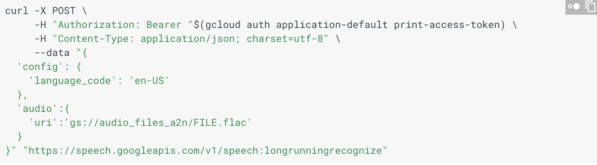
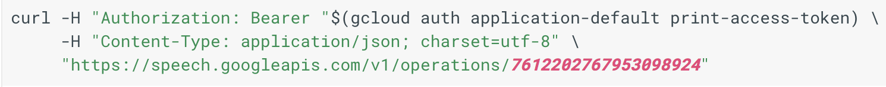

Speech 2 text using google
Configure path using --> export GOOGLE_APPLICATION_CREDENTIALS="/Users/20arjuna/Desktop/FILENAME.json"

Convert your video to a flac file with the following link.
To convert this flac file from a stereo to a mono type file: "cd" until you get to the directory where the flac file is stored. Initiate the brew command by typing the following into your terminal: brew install ffmpeg. Then use the following command: ffmpeg -i FILENAME.flac -ac1 OUTPUTFILE.flac
Upload the file to a bucket in google storage, probably in the audio_files_a2n bucket. Now make sure the name of the flac file is substituted into the above code (represented in the curlpost image). The uri should look something like gs://audio_files_a2n/FILENAME.flac
This returns a number like this
Insert that number to the following prompt

Keep running the above prompt again and again. Till it works.